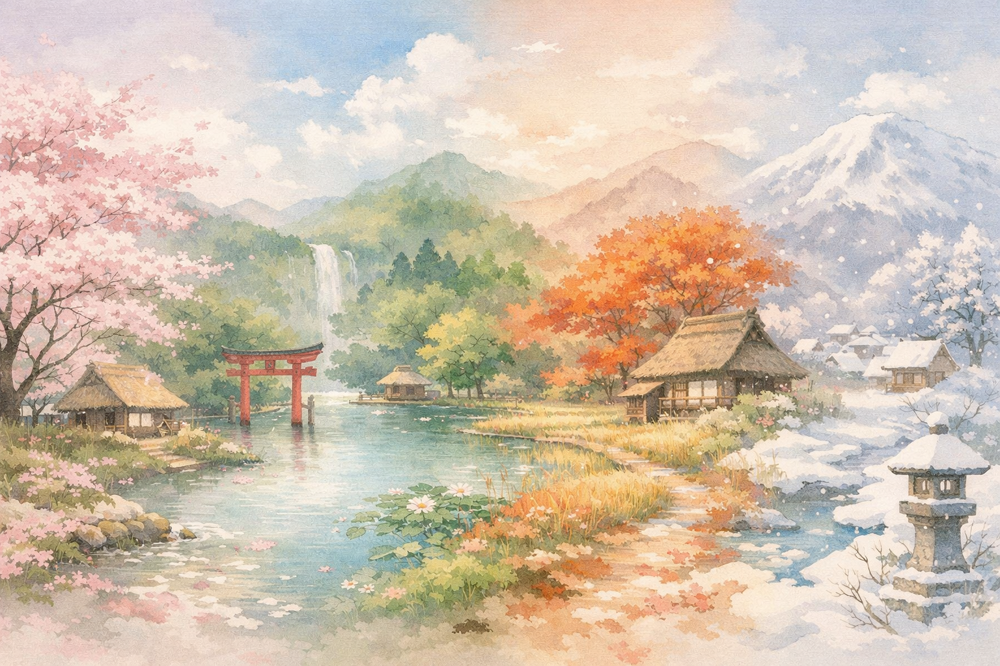

地理コラム
シャカマガ ＃1
5分で読めるよ
当たり前じゃない!? 日本に「春夏秋冬」がある4つの理由

巻頭特集
奇跡のバランス！日本の美しい「四季」はどうやって作られる？
皆さん、こんにちは！シャカマガ編集部です。春の桜、夏の海、秋の紅葉、冬の雪……。私たちにとって「春夏秋冬」があるのは当たり前ですよね。でも、世界地図を広げてみると、一年中暑い国や、ずっと氷に覆われている国もあります。
では、なぜ日本にはこんなにもハッキリとした「4つの季節」があるのでしょうか？実はそれ、宇宙レベルの偶然と、日本列島ならではの絶妙な地理条件が重なり合った「奇跡のコラボレーション」だったんです！その秘密を、4つの理由に分けて解き明かしていきましょう！
🌍
理由1：地球が「ナナメ」に傾いて回っているから
季節ができる最も根本的な理由は、地球の「動き方」にあります。
🌐 地軸の傾き
地球は自転しながら、1年かけて太陽の周りを回って（公転）います。このとき地軸はまっすぐではなく、約23.4度ナナメに傾いたまま回っているんです。
☀️ 太陽の光の当たり方が変わる
傾いているため、地球の位置によって太陽の光の角度（南中高度）や昼の長さが変わります。
夏：光がほぼ真上から当たり、地面が強く熱せられて昼も長い。
冬：光がナナメから弱く当たり、地面が温まらず昼も短い。
→ これが、地球規模で見たときの「夏は暑く、冬は寒い」理由です。
📍
理由2：日本が「中緯度」にあるから
地球が傾いているからといって、どこでも四季ができるわけではありません。日本の「場所」がポイントです。
🔥 赤道付近（低緯度）
太陽の光が一年中強く当たるため、ずっと「夏」のような気候です。
❄️ 北極・南極（高緯度）
太陽の光が一年中ナナメからしか当たらないため、ずっと「冬」のような気候です。
🗾 日本の位置（中緯度）
赤道と北極のちょうど中間あたり（北緯約20〜45度）の「中緯度」に位置しています。
→ 中緯度は光の当たり方が1年で最もダイナミックに変化するエリア。だから暑すぎず寒すぎず、メリハリのある春夏秋冬が生まれます。
🌬️
理由3：季節を運ぶ「モンスーン（季節風）」があるから
日本のはっきりとした季節感を決定づけているのが、日本周辺に吹く風です。
🔄 モンスーン（季節風）とは
季節によって吹く方向が逆になる風のこと。海と陸の「温まりやすさ・冷めやすさ」の違いから生まれます。
🌀 夏の日本（南東からの風）
太平洋側から「暖かく湿った季節風」が吹き込み、日本の夏特有の「むし暑さ」や多くの雨をもたらします。
🌨️ 冬の日本（北西からの風）
大陸から「冷たく乾いた季節風」が吹き込みます。日本海を渡るときに水分を吸い込み、山脈にぶつかって日本海側に大雪を降らせます（太平洋側は乾いた晴れが続きます）。
→ このモンスーンのおかげで、日本の夏と冬のカラーが全くちがうものになっています。
🌊
理由4：海流と地形のスペシャルコンボ
最後に、日本がユーラシア大陸の東の端にあり、海に囲まれた島国であることも欠かせない要素です。
🌊 海流のぶつかり合い
南からの暖流（黒潮・対馬海流）と、北からの寒流（親潮・リマン海流）が流れています。これが気温や降水量に影響し、春や秋の「長雨（梅雨や秋雨）」の要因の一つにもなります。
⛰️ 背骨のような山脈
列島の中央には高く険しい山脈が連なります。この山脈が季節風をブロックするため、「日本海側」と「太平洋側」でまったくちがう冬の景色を作り出します。
まとめ
「地軸の傾き」×「中緯度」×「季節風」×「海流と地形」。この4つの奇跡が重なって、日本の美しい春夏秋冬は生まれているんだね！